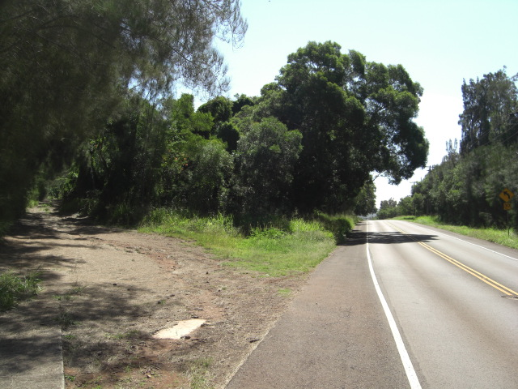

おっす！僕のブログへようこそ。あまりつまらないかもしれませんが、僕が最近考えてること、好きなこと、とんでもないことなどを記載しますのでごゆっくりご覧くださいね。ブログを母国語の英語で書くほうが多いでしょうが（アメリカ人さかいにさ！）日本語でのコメントをどうぞ！時々日本語でも書いてみるからＲＳＳフィードを登録してね。んじゃ、待ってま～す！
March 2009 Archives
For those of you who haven't seen this movie, go out and rent it now, now, NOW! This has rapidy become one of my all time favorite movies, and is definitely one of the best of 2008. The subtitles are a bit clunky, but it truly is good. And don't worry -- the vampirism and horror elements are way in the background, secondary elements; so don't pass it up because you don't like scary movies.
I finally did it! Kaulapapa is a state park in Molokai, located in the higher elevations. It's quite a change from the rest of the island, with pine and fir forests and much cooler temperatures. It was only about 21.5 miles (34.5km) one way, which doesn't seem like much when I write it down... Maybe I shouldn't brag about that... Anyway, Molokai essentially runs east and west, so riding west is a breeze because, well, there's a breeze: there's almost always a tailwind from the Trade Winds this time of year. (Remember the Disney cartoon Talespin? That was a good cartoon.) So the ride out was pretty easy. The trip up the mountain wasn't bad either; it was easy compared to the weekly mountain trips I made through Arashiyama in Kyoto.
Kaualpapa Point! Most people know Molokai as the place with the leper colony, and yep, it's still there, and Kaulapapa Point overlooks it. It's a truly stunning view too. One thing that alwasy bugged me about Niigata, and the south shore of Molokai where I live, is that there's always another island in the way when looking out on the ocean (Sado for Niigata, Lanai and Oahu for Molokai). Not so on the north side, and from Kaulapapa Point you just see the ocean merging into the sky on the horizon. Now THAT would get me to stay here if I had a house overlooking that.
Spent about two hours hanging out in the park up there. Really, all I want it quietude. You know how Tyrol just kinda left and went his own way on the last episode of Battlestar Galactica? All I could do was sigh... Anyway, quiet park, beautiful coniferous scenery, and then the bike ride home. That westerly tailwind was a brutal headwind, and with already excrutiating saddle soreness the extended trip back was tough. Made it, with only two jerks yelling or honking as they drove by to scare me. Ah, the aloha spirit, eh?
So, just a few photos of that attached. I don't usually take photos of myself anyway, so don't get your hopes up on seeing the a wistful, longing Viking gaze out over the sea. I hope to make it a weekly trip up there, even if it's not a weekly bike trip. In the meantime, Asclepios, heal this butt o' mine! 
My esteemed friend Bill sent me the following video, which describes my reaction to Twitter "to a T". It seems like mass texting to me, but with a giant fist of banality punching the common sense out of people. If you were updating people on an event that is unfolding with interest to many, tweet away. A cool concert? Tweet me! A toxic spill and the budding powers that are transforming you? Tuh-weeeeeeet♪♪♪ But I don't care about your burrito. 'Course, sadly this is undoubtedly a tutorial video mocking me and the three people on the planet not tweeting, with every word here redounding scoff and shame 'pon me. Anyway, enjoy. Oh, and I think calling a person who tweets a "Twat", or saying the past tense of tweet is "twat", is too easy and a bit musty. How about calling a tweet that is super duper a "twat", sorta like how something cool is "phat"? "Dude, that twat was tha SHITE!" (British version) Anybody out there wanna popularize that for me?
I'm hoping to get a Mystery Science Theater 3000 discussion going (old TV show, sure, but a classic that never gets cheesy!), as well as maybe an online story and other continuing content, so stay tuned! Or, well, if you're somehow wandering in to this site (maybe looking for Norwegian + Porn + Kirk + teeny tiny itty bitty on Google?), join the RSS Revolution!
Just wanted to mention a fun comical RPG that you can play from your browser. Come and join the world of Turtle Tamers, menacing Booze Giants, and lots and lots o' Moxie!
http://www2.kingdomofloathing.com/login.php?loginid=4235df2bdf1b4eb9b5d91391efe4a6cd
Best of all, it's turn based, meaning that you can only do a certain amount of adventrues per day. No more messy "Did I remember to take the puppies out of the car in record breaking Phoenix heat yesterday?" that you get with World of Warcraft. Not that I'm dissing World of Warcraft, mind you! I just miss those sweet little puppies...
Oh, and don't forget to check out some of the cool KOL swag!
Aidan Hughes is a well known illustrator, perhaps best known for his KMFDM illustrations. (I was kinda surprised to learn that the meaning of KMFDM as "Kill Mother Fucking Depeche Mode" is just a legend...), but he also has a slew of other great artwork. One of my favorite is his Abe Lincoln poster, which I feel is one of the best depictions of the Great Logsplitter.
http://bruteprop.com/v3/shop_poster_abe.html
However, I think my favorite from his oeuvre is this
http://www.wallpaperpimper.com/Aidan-Hughes-Split-wallpaper-139505
Am hoping to make a cycling trip to Kualapuu tomorrow. It should be about 30-35 miles one way, half of that uphill, but it'll be worth it. Kualapuu is higher in elevation than most other areas on the island, so there are actually pine trees and forests and everything! Can't wait. I'll be sure to snap some pics and post 'em here. If I make it, that is...
Sorry, gotta toot my own horn on this one. One of my very favorite websites if the Straight Dope (www.straightdope.com), a repository of wisdom and, well, straight dope. Anyway, I had the fortune a while back to have had my question picked out from what must be a kajillion questions daily and posted on the site: Are UV Rays Really More Powerful on Cloudy Days? (http://www.straightdope.com/columns/read/2732/are-uv-rays-really-more-powerful-on-cloudy-days)
I'd like to note one mistake: the "when I asked a friend" part should read "when I asked my girlfriend", for this was a conversation that my former girlfriend Keiko and I would have, so it was Keiko that inspired this question. I like to give credit where credit is due.
Anyway, enjoy!
Zero-point energy is a bust, but zero-point motion is pretty cool! It's what allows helium to cool to absolute zero and remain a liquid, and do all sorts of neat stuff. Check out this video for more!
This is a bit old news, but how about this for the epitome of cool furniture?
Yep, magnetic levitation, right in your own home! At $10,000 a pop though it means no one is going to drink on my chair! Then again, I suppose it would just dribble through... Now if they could only digitize sitting!
I was reading an article on Scientific American recently called "Creationism Feels Right, But That Doesn't Make It So". http://www.sciam.com/article.cfm?id=creationism-feels-right-but-that-doesnt-make-it-so
I agree with the title outright -- however right or natural it may feel, Creationism is flat wrong. But I disagree with the thrust of the story (and I realize the author of the article is merely reporting the research) that our cognitive systems are hardwired to believe it so, and I think it is a line of thinking that is common and misleading among both sides. I'm no psychologist or professional in the field, but here's my rant.
The article states that "...5- to 7-year-old children give either spontaneous generationist (e.g., "it got born there") or creationist (e.g., "God made it") responses." I don't see why this has to be fraught with implication. Children ask questions about everything from the time they are able to talk meaningfully. Sure, "Why is the sky blue" and similar questions are often answered either religiously or scientifically, "Because God made it so" or "See, light is scattered more ..." But how much of our lives is man-made? We "make" nearly everything around us. Mommy makes coffee, daddy makes dinner, Bobby made a mess on the floor. Someone or something made that car, that shirt, that door, that stain on the wall. Perhaps some of our tendency to look for a "Maker" in everything owes to the ubiquity of "make" as an action verb, but it's not hard to see that nearly everything children see and interact with is "made", to one degree or another.
Combined with this is the tendency of children to learn from everyone and everything around them. Sure, Bobby's parents are Creationists, but that doesn't mean his teachers are. Suzy's parents are atheists, but her playmates aren't. These people form just as strong an influence on a child's thoughts as the parents themselves. To me, as with all factors of the "human experience", it's nigh impossible to pare it down to a simple answer.
So when a child says that the first turtle or fox is either "born" or "made", I think it represents both incomplete knowledge of the world around him and assumptions based on what he does know. How often do scientists ask children where the first pen came from? Or where the first word came from? I think any child at that age would fall back on one of two assumptions on the world: either it was "made", like the house he lives in, or "born", like his little brother.
The same goes for the 8-10 range. I don't feel that to say "Nature" made something is creationist at all. They're taught that the Sun makes light, clouds make snow, dogs make puppies, cats make kitties, and pop makes pee. On a purely scientific level pop doesn't "make" pee -- our bodies use what they can from pop and excrete the remainder. But that's an awfully detailed response for most at that age, and heck, probably more than most parents even know, so it's easier to just say "make". So it's no wonder that children at that age, who are starting to learn more about the world around them, look at everything as being "made". It seems natural then that by age 10 and above, when they're not only learning in more detail but being given more detail by their parents, while simultaneously staking out an identity for themselves shaped by their upbringing, that they start to fall on ideological lines.
Similarily, later the article discusses teleo-functional thinking as another example of our "hardwiring" for Creationism, but again this is misleading. We look for a function in man-made objects because we know that nearly all objects are made for a purpose. Even seemingly useless art is explained away as being "art". And we know from evolution that the majority of "affordances" on animate objects are because they are beneficial to it in some way. If ivy has hooks, it's to scale walls. We have hair to keep us warm. Some of these affordances may be baffling to us, but that doesn't mean they don't have an explanation. The same goes for a strange new Sharper Image device -- we may not grasp that meaning at first, but once we do it seems as clear as day.
Ultimately, I don't think humans are hardwired to believe in a Maker. Rather, we humans have come to a point where we either can make (or reproduce) everything, or understand how it was made, and this influences our perception on the origins of anything and everything. I'm sure ancient humans undoubtedly figured out that clouds make rain, but couldn't figure out where clouds come from so created a Creator for them. Modern humans are the same, but we're running out of things that we can't figure out. The origin of humans is far too contentious for us to ever come to a definitive answer, but using cognitive hardwiring to explain our fascination with naming a mystical Being as the Ultimate Maker is grasping a bit.